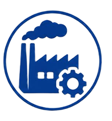
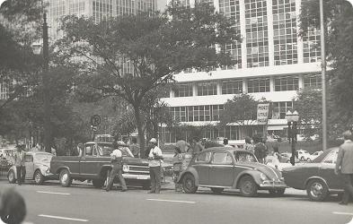
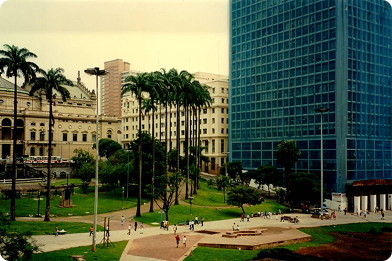
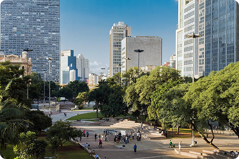

Urbanização é o processo em que as cidades vão crescendo e concentrando cada vez mais pessoas. Isso acontece principalmente por causa da industrialização e da migração de pessoas do campo para a cidade.
Com isso, as áreas urbanas aumentam e também cresce a necessidade de serviços
públicos, como saúde, educação, transporte e moradia.

Mais fábricas e empregos nas cidades.

Pessoas deixam o campo em busca de oportunidades urbanas.

As cidades crescem, ocupando novas áreas.
Grandes cidades concentram população, serviços e atividades econômicas.

Tecnologia é usada para melhorar mobilidade, serviços e qualidade de vida.

Construções em áreas de risco ou sem infraestrutura adequada.

Mais veículos e deslocamentos, aumentando os congestionamentos.

Impermeabilização do solo e falta de drenagem adequada.

A expansão urbana pode reduzir espaços naturais.

O aumento de veículos, indústrias e resíduos afeta o ambiente.

O acesso a moradia, transporte, saúde e outros serviços pode ficar desigual.
O Brasil passou por um intenso processo de urbanização, principalmente durante o século XX.
População urbana, em % do total de habitantes.
Passe o mouse ou use as setas do teclado para ver cada ano.

Expansão das atividades industriais e dos empregos urbanos.
Migração da população do campo para as cidades em busca de melhores oportunidades.

Crescimento e concentração populacional nas grandes cidades e regiões metropolitanas.
O processo de urbanização também transformou os espaços das grandes cidades.
Clique em uma época para vê-la em foco.
O Vale do Anhangabaú aparece como um espaço integrado ao intenso fluxo urbano de São Paulo. A presença de carros, sinalização e grandes edifícios revela uma cidade em processo de modernização e expansão.


A paisagem mostra a transformação do Vale em um espaço mais voltado à circulação e convivência. A arquitetura moderna e a reorganização das áreas verdes refletem novas formas de planejamento urbano e o avanço das tecnologias construtivas.
Atualmente, o Vale apresenta uma paisagem urbana mais integrada, com áreas de lazer, circulação de pedestres e grandes edifícios. A evolução tecnológica e urbana contribuiu para transformar o espaço em um ambiente mais conectado às necessidades da cidade contemporânea.

Veja como a tecnologia ajuda a planejar, conectar e cuidar das cidades.
Conhecer Cidades Inteligentes